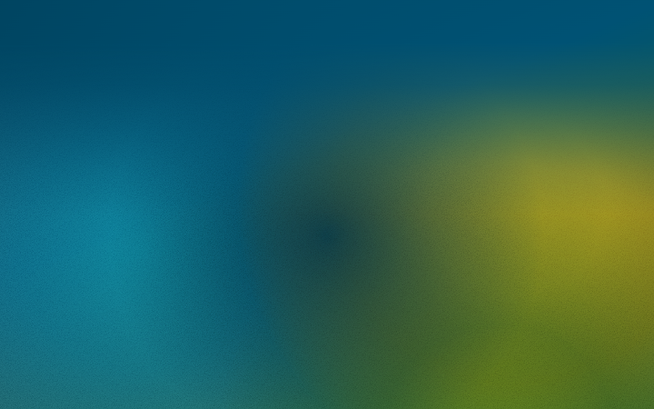
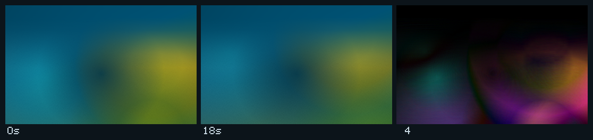
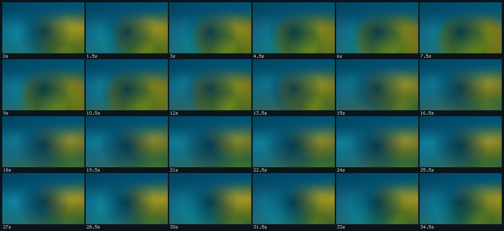

Internal · not client-facing
Twenty-four real renders of the homepage hero, 1.5 seconds of animation apart, covering 36 seconds of the field. Nothing here is a mock-up: each frame is the live page with the chrome and copy hidden so the ground can be judged on its own.

Playback is time-lapse, not real time — at 12× the 36-second drift plays in 3 seconds. Two of the three masses move on periods that do not divide each other (28s / 36s / 32s), so this loop is a sampling of the motion, not the whole cycle.


| Measure | Value |
|---|---|
| Masses | 84vmax radial, three moving + one static ink guard |
| Periods | 28s aqua · 36s gold · 32s lime |
| Travel | 26–28% of each mass, three-stop orbit + scale breath |
| Animated properties | transform, opacity only — no filter |
| Grain | feTurbulence tile, 160px, recentred to mean 122, overlay at .20 |
| Motion over 2.5s | mean |Δ| 8.06/255, 38% of pixels change ≥ 8 levels |
| Headline contrast (1440) | sky 5.58–5.92:1 · gold 5.30–5.63:1 |
| Headline contrast (390) | sky 5.04:1 · gold 4.79:1 |